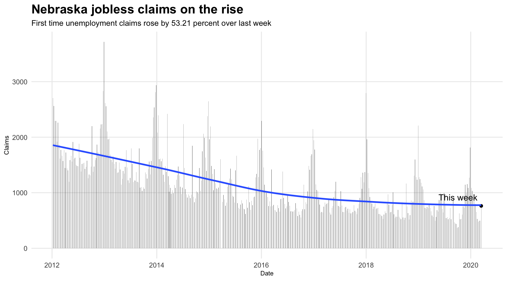

Chapter 22 Automating analysis
Many of the data analyses that you do will be largely one-off efforts – you’re going to do the analysis and write the story and be done. Maybe you’ll come back to it in a couple of months or years, but really you’re just doing it once.
But what happens when you have a long-running story, where you’re going to update it every day, or every week? What changes when you’re writing that code?
- How will this run again without changing anything?
- What questions do you have that have to be answered each time?
- What changes when you have to repeat questions to changing data?
The global COVID-19 pandemic is something we’re going to be writing about and covering for some time. One element of it – one that materialized in Nebraska as I am writing this – is a tsunami of first time joblessness claims for unemployment assistance. That data is regularly published, and we’re going to be talking about it weekly for a long time. So it’s the ideal candidate for repeating analysis – scripting the questions we want to answer every week and doing so in a way that we can just load it without having to change anything.
Let’s get some new libraries to our typical tidyverse import. First, I’m going to add a library called readxl, which does what you think it does. It reads Microsoft Excel files. The next one I’m going to add is DT. It stands for datatables, and it makes your dataframes into html tables that are browsable and searchable. This is a bigger issue for me – the author who is turning these into html pages – than you, working in your notebooks. We’re also going to add a library called ggrepel, which assists in putting tables on dots in charts.
You install them the same way you do anything else – install.packages("readxl") and install.packages("DT") and install.packages("ggrepel").
library(tidyverse)
library(janitor)
library(readxl)
library(DT)
library(ggrepel)22.1 Automating downloads an imports
Nebraska publishes data weekly on first time unemployment claims on the state Department of Labor website.
There’s four datasets. We’re looking at the weekly initial claims from 2012 to present. If you click it, you’ll get an Excel spreadsheet. That’s a problem, given that we’ve been working with CSVs all along. So the problem we have before us is this: Have to download it first, then open an Excel file with multiple sheets and lots of header and footers.
There’s a multitude of ways to get data from a website, but base R has a simple function to just download a file and name it. Couldn’t be easier. Right or control click on the link for the 2012 to 2020 initial claims data and copy the link location. Then use this function:
download.file("https://neworks.nebraska.gov/admin/gsipub/htmlarea/uploads/NE%20UI%20Weekly%20Initial%20Claims.xlsx", destfile = "weeklyinitialclaims.xlsx")Open the file in Excel so you can see what we’re working with. The first sheet is just definitions and explanations. Then each sheet is a year (or year to date) of data. Some have footers. Some don’t. Some have a headline. Some don’t. So we have some work ahead of us.
There are better ways to do this, and if your author was better at this, I’d tell you about it. But for beginners and people who aren’t totally sure of themselves, explicit is better than implicit. So instead of using programming magic, we’re going to use copy and paste. My programmer friends just died inside a little, but done is better than clever.
What we need to do, in words, is this:
- Read a specific sheet
- Skip the top row
- Clean the column names with janitor.
- Select just the first two rows, which will help us chop out some garbage.
- We need to find if the sheet has that source line at the end of the data, so we’ll use
str_detectinstringrand filter it out. - We’ll use janitor to remove any empty rows and columns
- And lastly, we’ll convert all the numbers in initial_claims to actual numbers, because the Source line made them character on import.
It’s a lot, but not really. Each step is very simple, and is designed to solve one problem. And after we do it with one, we’ll do it with the next, and the next, and the next, so on and so forth.
weeklyclaims20 <- read_excel("weeklyinitialclaims.xlsx", sheet=2, skip=1) %>%
clean_names() %>%
select(1:2) %>%
filter(!str_detect(initial_claims, "Source")) %>%
remove_empty(c("cols", "rows")) %>%
mutate(initial_claims = as.numeric(initial_claims))## New names:
## * `` -> ...3
## * `` -> ...4
## * `` -> ...5weeklyclaims19 <- read_excel("weeklyinitialclaims.xlsx", sheet=3, skip=1) %>%
clean_names() %>% select(1:2) %>%
filter(!str_detect(initial_claims, "Source")) %>%
remove_empty(c("cols", "rows")) %>%
mutate(initial_claims = as.numeric(initial_claims))## New names:
## * `` -> ...3
## * `` -> ...4
## * `` -> ...5weeklyclaims18 <- read_excel("weeklyinitialclaims.xlsx", sheet=4, skip=1) %>%
clean_names() %>%
select(1:2) %>%
filter(!str_detect(initial_claims, "Source")) %>%
remove_empty(c("cols", "rows")) %>%
mutate(initial_claims = as.numeric(initial_claims))
weeklyclaims17 <- read_excel("weeklyinitialclaims.xlsx", sheet=5, skip=1) %>%
clean_names() %>%
select(1:2) %>%
filter(!str_detect(initial_claims, "Source")) %>%
remove_empty(c("cols", "rows")) %>%
mutate(initial_claims = as.numeric(initial_claims))
weeklyclaims16 <- read_excel("weeklyinitialclaims.xlsx", sheet=6, skip=1) %>%
clean_names() %>%
select(1:2) %>%
filter(!str_detect(initial_claims, "Source")) %>%
remove_empty(c("cols", "rows")) %>%
mutate(initial_claims = as.numeric(initial_claims))
weeklyclaims15 <- read_excel("weeklyinitialclaims.xlsx", sheet=7, skip=1) %>%
clean_names() %>%
select(1:2) %>%
filter(!str_detect(initial_claims, "Source")) %>%
remove_empty(c("cols", "rows")) %>%
mutate(initial_claims = as.numeric(initial_claims))
weeklyclaims14 <- read_excel("weeklyinitialclaims.xlsx", sheet=8, skip=1) %>%
clean_names() %>%
select(1:2) %>%
filter(!str_detect(initial_claims, "Source")) %>%
remove_empty(c("cols", "rows")) %>%
mutate(initial_claims = as.numeric(initial_claims))
weeklyclaims13 <- read_excel("weeklyinitialclaims.xlsx", sheet=9, skip=1) %>%
clean_names() %>%
select(1:2) %>%
filter(!str_detect(initial_claims, "Source")) %>%
remove_empty(c("cols", "rows")) %>%
mutate(initial_claims = as.numeric(initial_claims))
weeklyclaims12 <- read_excel("weeklyinitialclaims.xlsx", sheet=10, skip=1) %>%
clean_names() %>%
select(1:2) %>%
filter(!str_detect(initial_claims, "Source")) %>%
remove_empty(c("cols", "rows")) %>%
mutate(initial_claims = as.numeric(initial_claims))Now we need to combine all those tables together. We can do that with rbind and some convenient overwriting of a dataframe to add new data each time.
weeklyclaims <- rbind(weeklyclaims12, weeklyclaims13)
weeklyclaims <- rbind(weeklyclaims, weeklyclaims14)
weeklyclaims <- rbind(weeklyclaims, weeklyclaims15)
weeklyclaims <- rbind(weeklyclaims, weeklyclaims16)
weeklyclaims <- rbind(weeklyclaims, weeklyclaims17)
weeklyclaims <- rbind(weeklyclaims, weeklyclaims18)
weeklyclaims <- rbind(weeklyclaims, weeklyclaims19)
weeklyclaims <- rbind(weeklyclaims, weeklyclaims20)22.2 Exploring the data
Let’s take a look at what we have, using datatables. The formatDate business just makes the date look nicer.
datatable(weeklyclaims) %>% formatDate(1, "toLocaleDateString")Let’s just look at the most recent week, and that’s something that takes on different meaning when we’re talking about updating data. We need to make this generic so that every time we pull this up and run it, it’s the most recent week at the top. This time, it’s very simple.
weeklyclaims20 %>% arrange(desc(week_ending_date))## # A tibble: 11 × 2
## week_ending_date initial_claims
## <dttm> <dbl>
## 1 2020-03-14 00:00:00 763
## 2 2020-03-07 00:00:00 498
## 3 2020-02-29 00:00:00 496
## 4 2020-02-22 00:00:00 476
## 5 2020-02-15 00:00:00 527
## 6 2020-02-08 00:00:00 653
## 7 2020-02-01 00:00:00 796
## 8 2020-01-25 00:00:00 916
## 9 2020-01-18 00:00:00 913
## 10 2020-01-11 00:00:00 1036
## 11 2020-01-04 00:00:00 108922.3 Analysis
Now is when we need to start asking ourselves – what are the questions that are going to come up week after week. What about how this most current week compares to all weeks going back to 2012? What if we just ranked them? Where does this week rank? For that, we’ll create a new column called Rank using mutate and we’ll use a function called min_rank to rank them. I’m going to save them to a dataframe and use data
ranked <- weeklyclaims %>% mutate(Rank = min_rank(desc(initial_claims))) %>% arrange(desc(week_ending_date))
datatable(ranked) %>% formatDate(1, "toLocaleDateString") Let’s think about this a little more. What else could we do with this. What are the recurring questions? How about the percent change between this week and last week?
To do that, we need our dates to be next to each other – side by side. Then we can do new minus old divided by old. To do that, we’re going to use a function from tidyr called pivot_wider, which will transform our data from one row per week to one row, with the weeks as columns.
change <- weeklyclaims20 %>% pivot_wider(names_from = week_ending_date, values_from = initial_claims)
head(change)## # A tibble: 1 × 11
## `2020-01-04` `2020-01-11` `2020-01-18` `2020-01-25` `2020-02-01` `2020-02-08`
## <dbl> <dbl> <dbl> <dbl> <dbl> <dbl>
## 1 1089 1036 913 916 796 653
## # … with 5 more variables: 2020-02-15 <dbl>, 2020-02-22 <dbl>,
## # 2020-02-29 <dbl>, 2020-03-07 <dbl>, 2020-03-14 <dbl>Now the problem we have is … which column is the last one, and which one is the previous one? I’ll be honest, this isn’t easy in R. But the trick is to reverse the order of the columns. Then, your newest one is column 1 and the next newest is 2.
changecalc <- ((rev(change)[1] - rev(change)[2])/rev(change)[2])*100
changecalc## 2020-03-14
## 1 53.21285So whatever the date, that’ll always return the percent change between the most recent date and the previous week.
22.4 Making updating graphics
More than numbers, we are going to want to see this data. We can build this in steps. First, let’s just make a big bar chart.
ggplot() +
geom_bar(data=ranked, aes(x=week_ending_date, weight=initial_claims)) 
So that shows us that the trend is going down over time, and that there’s some regular spikes around the holidays. Which tells us this data is seasonal, but we knew that going in.
Let’s build up some more layers to highlight trends and the most recent spot.
First, we’ll slice out a dataframe that’s just the most recent data.
latest <- ranked %>% slice(1)Now, in ggplot, we can add multiple layers.
The first layer will be all the bars.
The second layer will just be the latest.
Then we’ll add a point to the top of that line to really draw attention to it.
Then we’ll use ggprepel to label it.
Then I’m going to add a smoothing line. That’ll illustrate the trend clearly.
The rest is labeling and adjusting the text to make it look more like a news graphic.
ggplot() +
geom_bar(data=ranked, aes(x=week_ending_date, weight=initial_claims)) +
geom_bar(data=latest, aes(x=week_ending_date, weight=initial_claims), fill="red") +
geom_point(data=latest, aes(x=week_ending_date, y=initial_claims)) +
geom_text_repel(data=latest, aes(x=week_ending_date, y=initial_claims + 150, label="This week")) +
geom_smooth(data=ranked, aes(x=week_ending_date, y=initial_claims), method=loess, se=FALSE) +
labs(title="Nebraska jobless claims on the rise", x="Date", y="Claims") +
theme_minimal() +
theme(
plot.title = element_text(size = 16, face = "bold"),
axis.title = element_text(size = 8),
plot.subtitle = element_text(size=10),
panel.grid.minor = element_blank()
)## `geom_smooth()` using formula 'y ~ x'
One thing we are missing? Context. What if we programmatically wrote the chatter for this chart using the percent change calculation we did before?
First, we format the change to look more news graphic like and not with 7 significant digits.
changetext <- round(changecalc[[1]], digits=2)Now we’re going to use a function called paste to merge some text together. We’re going to paste together a sentence fragment, the percent change number and another sentence fragment together to form a sentence. We’ll save it as sub, because that’s what it’s called in ggplot – a subtitle.
sub <- paste("First time unemployment claims rose by ", changetext, " percent over last week", sep="")Here’s our sentence:
sub## [1] "First time unemployment claims rose by 53.21 percent over last week"Now we can add that to our labels.
ggplot() +
geom_bar(data=ranked, aes(x=week_ending_date, weight=initial_claims)) +
geom_bar(data=latest, aes(x=week_ending_date, weight=initial_claims), fill="red") +
geom_point(data=latest, aes(x=week_ending_date, y=initial_claims)) +
geom_text_repel(data=latest, aes(x=week_ending_date, y=initial_claims + 150, label="This week")) +
geom_smooth(data=ranked, aes(x=week_ending_date, y=initial_claims), method=loess, se=FALSE) +
labs(title="Nebraska jobless claims on the rise", subtitle=sub, x="Date", y="Claims") +
theme_minimal() +
theme(
plot.title = element_text(size = 16, face = "bold"),
axis.title = element_text(size = 8),
plot.subtitle = element_text(size=10),
panel.grid.minor = element_blank()
)## `geom_smooth()` using formula 'y ~ x'
This is going to be a story for months, if not years. So repeating this analysis is a must for a reporter covering the economy in Nebraska. We’ve set ourselves up to do this every week when the data comes out. We just open our notebook, go to Run > Restart R and Run All Chunks and sit back and watch as it does it all again.
Then we go report.
22.5 The State vs the Feds
As I write this, the state hasn’t updated their data but the feds have, and the feds have more. The problem? It’s a mess. And it’s not automatable. So to get more data, you need to go to the Department of Labor website and fill out the form.
Leave the years, select state, pick yours (I’m taking Nebraska) and select spreadsheet, but know that it’s a lie. If you try to load it using read_excel, you’ll get an error. Why? Because what is being downloaded is an HTML file. So you can use rvest to read and parse it.
However, that isn’t so simple.
library(rvest)
library(lubridate)First, read the file you downloaded. You’ll need to add the fill=TRUE to html_table() to solve a problem with some of the data.
claims <- read_html("~/Downloads/r539cy.xls") %>%
html_nodes("table") %>%
html_table(fill=TRUE) ## Error: '~/Downloads/r539cy.xls' does not exist.Similar to previous efforts, we get a list. The first element is a dataframe, so let’s get that.
claims <- claims[[1]] ## Error in eval(expr, envir, enclos): object 'claims' not foundNow if you look at this data, you’ll see that the header row is empty, and the header names are in the first row. Also, none of this data is formatted correctly. We need to fix that.
To do this, we’re going to fix this in steps after we create a new dataframe called cleanclaims
- We’ll remove empty columns.
- We’ll rename the columns with what they are, using
janitorstyle naming conventions. - We’ll filter out the old header row.
- We’ll mutate each field to format them correctly. The date columns will use
lubridate’smdyfunction. Numbers will usereadr’sparse_numberfunction to solve the comma separator issue.
cleanclaims <- claims %>%
remove_empty("cols") %>%
rename("state" = 1, "filed_week_ended"= 2, "initial_claims"=3, "reflecting_week_ended"=4, "continued_claims"=5, "covered_employment"=6, "insured_unemployment_rate"=7) %>%
filter(state != "State") %>%
mutate(filed_week_ended = mdy(filed_week_ended), initial_claims=parse_number(initial_claims), reflecting_week_ended=mdy(reflecting_week_ended), continued_claims=parse_number(continued_claims), covered_employment=parse_number(covered_employment), insured_unemployment_rate=parse_number(insured_unemployment_rate))## Error in is.data.frame(x): object 'claims' not foundIf you open cleanclaims, you may notice something:
cleanclaims %>% arrange(desc(filed_week_ended)) %>% head()## Error in arrange(., desc(filed_week_ended)): object 'cleanclaims' not foundSee it? The latest data isn’t in there in my version. It’s in a press release.
So how do we add it? We use add_row from the tidyverse (specifically the tibble library).
updatedcleanclaims <- cleanclaims %>% add_row(state="Nebraska", filed_week_ended=as.Date("2020-03-28"), initial_claims=24572, reflecting_week_ended=as.Date("2020-03-21"))## Error in add_row(., state = "Nebraska", filed_week_ended = as.Date("2020-03-28"), : object 'cleanclaims' not foundNow we can repeat the analysis from above.
First we rank.
fedranked <- updatedcleanclaims %>% mutate(Rank = min_rank(desc(initial_claims))) %>% arrange(desc(filed_week_ended))## Error in mutate(., Rank = min_rank(desc(initial_claims))): object 'updatedcleanclaims' not foundWe get the latest week.
fedlatest <- fedranked %>% slice(1)## Error in slice(., 1): object 'fedranked' not foundThe previous week …
fedprevious <- fedranked %>% slice(2)## Error in slice(., 2): object 'fedranked' not foundAnd for this one, let’s grab the pre-crisis number as well as a basis point.
pre <- fedranked %>% filter(filed_week_ended==as.Date("2020-03-14"))## Error in filter(., filed_week_ended == as.Date("2020-03-14")): object 'fedranked' not foundNow we can do some percent change math similar to above. First we calculate the current change.
change <- round((((fedlatest$initial_claims - fedprevious$initial_claims)/fedprevious$initial_claims)*100), digits=0)## Error in eval(expr, envir, enclos): object 'fedlatest' not foundThen the change from the pre-crisis week.
prechange <- round((((fedlatest$initial_claims - pre$initial_claims)/pre$initial_claims)*100), digits=0)## Error in eval(expr, envir, enclos): object 'fedlatest' not foundAnd we roll it all into a subhead that we can use in the chart with a little paste-fu.
subhed <- paste("Applications for unemployment jumped ", change, " percent from last week to this week and are up ", prechange, " percent since March 14.", sep="")## Error in paste("Applications for unemployment jumped ", change, " percent from last week to this week and are up ", : object 'prechange' not foundAnd we make the graphic.
ggplot() +
geom_line(data=fedranked, aes(x=filed_week_ended, y=initial_claims, group=1)) +
geom_point(data=fedlatest, aes(x=filed_week_ended, y=initial_claims)) +
geom_text(data=fedlatest, aes(x=filed_week_ended-500, y=initial_claims + 500, label=initial_claims)) +
geom_point(data=fedprevious, aes(x=filed_week_ended, y=initial_claims)) +
geom_text(data=fedprevious, aes(x=filed_week_ended-500, y=initial_claims + 500, label=initial_claims)) +
geom_smooth(data=fedranked, aes(x=filed_week_ended, y=initial_claims), method=loess, se=FALSE) +
labs(title="Another record for jobless claims in Nebraska", subtitle=subhed, x="Date", y="Claims", caption = "Source: US Dept. of Labor | Graphic by Matt Waite") +
theme_minimal() +
theme(
plot.title = element_text(size = 16, face = "bold"),
axis.title = element_text(size = 8),
plot.subtitle = element_text(size=10),
panel.grid.minor = element_blank()
)## Error in fortify(data): object 'fedranked' not found